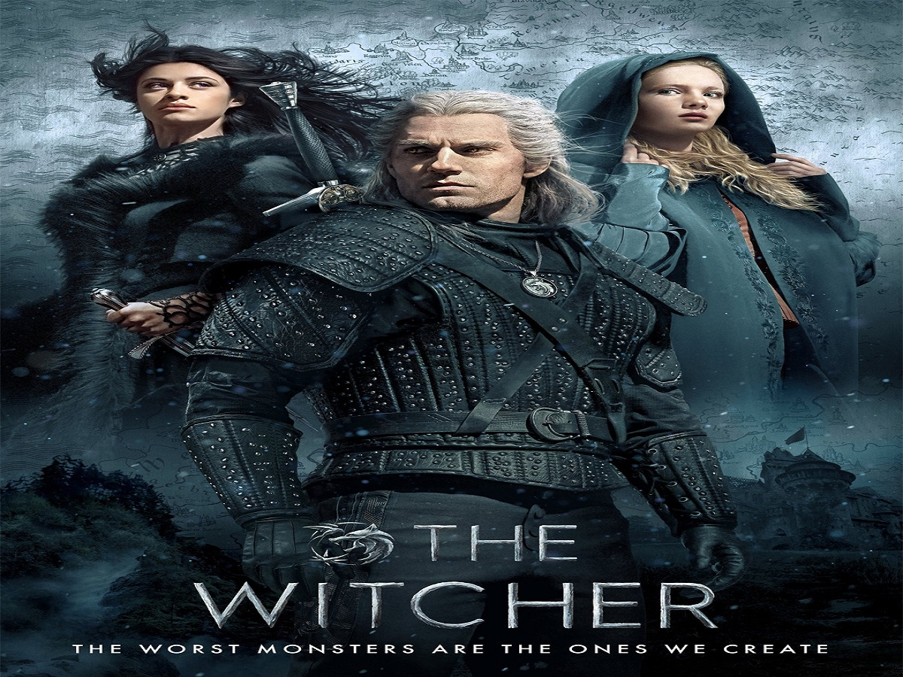
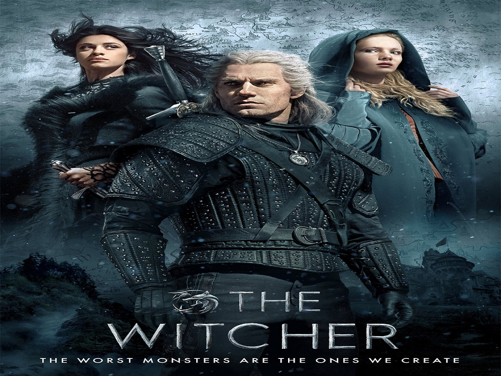

É produtora e roteirista de TV americana, nascida em Ohio e graduada pela Wittenberg University, em 2000, com bacharelado em Literatura Inglesa
e Escrita Criativa. Ela escreveu roteiros para TV como "The West Wing", "Justice", bem como escreveu e produziu programas como "Daredevil",
"Private Practice". Agora ela está trabalhando em um programa para a Netflix.

Nome: Lauren Schmidt Hissrich
Idade: 43 anos (01/08/1978)
Altura: 1,66m
País: EUA
Nomeações a prémios: 3 nomeações
Prémios: 0
Projetos Futuros: The Witcher: Blood Origin (sem data prevista)
Séries em que foi produtora:
The Witcher (2019-presente),The Witcher: Nightmare of the Wolf(2021), The Umbrella Academy (2019), The Defenders(2017), Daredevil (2016), Power(2014), Do No Harm(2013), Parenthood(2010), Private Practice (2007-2009), The West Wing (2002-2006).


 
